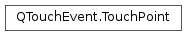

QTouchEvent.TouchPoint¶
Note
This class was introduced in Qt 4.6.
Synopsis¶
Functions¶
- def
ellipseDiameters() - def
flags() - def
id() - def
lastNormalizedPos() - def
lastPos() - def
lastScenePos() - def
lastScreenPos() - def
normalizedPos() - def
pos() - def
pressure() - def
rawScreenPositions() - def
rect() - def
rotation() - def
scenePos() - def
sceneRect() - def
screenPos() - def
screenRect() - def
setEllipseDiameters(dia) - def
setFlags(flags) - def
setId(id) - def
setLastNormalizedPos(lastNormalizedPos) - def
setLastPos(lastPos) - def
setLastScenePos(lastScenePos) - def
setLastScreenPos(lastScreenPos) - def
setNormalizedPos(normalizedPos) - def
setPos(pos) - def
setPressure(pressure) - def
setRawScreenPositions(positions) - def
setRect(rect) - def
setRotation(angle) - def
setScenePos(scenePos) - def
setSceneRect(sceneRect) - def
setScreenPos(screenPos) - def
setScreenRect(screenRect) - def
setStartNormalizedPos(startNormalizedPos) - def
setStartPos(startPos) - def
setStartScenePos(startScenePos) - def
setStartScreenPos(startScreenPos) - def
setState(state) - def
setUniqueId(uid) - def
setVelocity(v) - def
startNormalizedPos() - def
startPos() - def
startScenePos() - def
startScreenPos() - def
state() - def
swap(other) - def
uniqueId() - def
velocity()
Detailed Description¶
The
TouchPointclass provides information about a touch point in aPySide2.QtGui.QTouchEvent.
-
class
PySide2.QtGui.QTouchEvent.TouchPoint(other)¶ -
class
PySide2.QtGui.QTouchEvent.TouchPoint([id=-1]) Parameters: - other –
PySide2.QtGui.QTouchEvent::TouchPoint - id –
PySide2.QtCore.int
Constructs a
QTouchEvent.TouchPointfor use in aPySide2.QtGui.QTouchEvent.- other –
-
PySide2.QtGui.QTouchEvent.TouchPoint.InfoFlag¶ The values of this enum describe additional information about a touch point.
Constant Description QTouchEvent.TouchPoint.Pen Indicates that the contact has been made by a designated pointing device (e.g. a pen) instead of a finger. QTouchEvent.TouchPoint.Token Indicates that the contact has been made by a fiducial object (e.g. a knob or other token) instead of a finger.
-
PySide2.QtGui.QTouchEvent.TouchPoint.ellipseDiameters()¶ Return type: PySide2.QtCore.QSizeFReturns the width and height of the bounding ellipse of this touch point. The return value is in logical pixels. Most touchscreens do not detect the shape of the contact point, so a null size is the most common value. In other cases the diameters may be nonzero and equal (the ellipse is approximated as a circle).
-
PySide2.QtGui.QTouchEvent.TouchPoint.flags()¶ Return type: PySide2.QtGui.QTouchEvent::TouchPoint.InfoFlagsReturns additional information about the touch point.
See also
QTouchEvent.TouchPoint.InfoFlags
-
PySide2.QtGui.QTouchEvent.TouchPoint.id()¶ Return type: PySide2.QtCore.intReturns the id number of this touch point.
Do not assume that id numbers start at zero or that they are sequential. Such an assumption is often false due to the way the underlying drivers work.
-
PySide2.QtGui.QTouchEvent.TouchPoint.lastNormalizedPos()¶ Return type: PySide2.QtCore.QPointFReturns the normalized position of this touch point from the previous touch event.
The coordinates are normalized to the size of the touch device, i.e. (0,0) is the top-left corner and (1,1) is the bottom-right corner.
See also
PySide2.QtGui.QTouchEvent::TouchPoint.normalizedPos()PySide2.QtGui.QTouchEvent::TouchPoint.startNormalizedPos()
-
PySide2.QtGui.QTouchEvent.TouchPoint.lastPos()¶ Return type: PySide2.QtCore.QPointFReturns the position of this touch point from the previous touch event, relative to the widget or
PySide2.QtWidgets.QGraphicsItemthat received the event.See also
PySide2.QtGui.QTouchEvent::TouchPoint.pos()PySide2.QtGui.QTouchEvent::TouchPoint.startPos()
-
PySide2.QtGui.QTouchEvent.TouchPoint.lastScenePos()¶ Return type: PySide2.QtCore.QPointFReturns the scene position of this touch point from the previous touch event.
The scene position is the position in
PySide2.QtWidgets.QGraphicsScenecoordinates if thePySide2.QtGui.QTouchEventis handled by a QGraphicsItem::touchEvent() reimplementation, and identical to the screen position for widgets.See also
PySide2.QtGui.QTouchEvent::TouchPoint.scenePos()PySide2.QtGui.QTouchEvent::TouchPoint.startScenePos()
-
PySide2.QtGui.QTouchEvent.TouchPoint.lastScreenPos()¶ Return type: PySide2.QtCore.QPointFReturns the screen position of this touch point from the previous touch event.
See also
PySide2.QtGui.QTouchEvent::TouchPoint.screenPos()PySide2.QtGui.QTouchEvent::TouchPoint.startScreenPos()
-
PySide2.QtGui.QTouchEvent.TouchPoint.normalizedPos()¶ Return type: PySide2.QtCore.QPointFReturns the normalized position of this touch point.
The coordinates are normalized to the size of the touch device, i.e. (0,0) is the top-left corner and (1,1) is the bottom-right corner.
See also
PySide2.QtGui.QTouchEvent::TouchPoint.startNormalizedPos()PySide2.QtGui.QTouchEvent::TouchPoint.lastNormalizedPos()PySide2.QtGui.QTouchEvent::TouchPoint.pos()
-
PySide2.QtGui.QTouchEvent.TouchPoint.pos()¶ Return type: PySide2.QtCore.QPointFReturns the position of this touch point, relative to the widget or
PySide2.QtWidgets.QGraphicsItemthat received the event.See also
PySide2.QtGui.QTouchEvent::TouchPoint.startPos()PySide2.QtGui.QTouchEvent::TouchPoint.lastPos()PySide2.QtGui.QTouchEvent::TouchPoint.screenPos()PySide2.QtGui.QTouchEvent::TouchPoint.scenePos()PySide2.QtGui.QTouchEvent::TouchPoint.normalizedPos()
-
PySide2.QtGui.QTouchEvent.TouchPoint.pressure()¶ Return type: PySide2.QtCore.qrealReturns the pressure of this touch point. The return value is in the range 0.0 to 1.0.
-
PySide2.QtGui.QTouchEvent.TouchPoint.rawScreenPositions()¶ Return type: Returns the raw, unfiltered positions for the touch point. The positions are in native screen coordinates. To get local coordinates you can use mapFromGlobal() of the
PySide2.QtGui.QWindowreturned byQTouchEvent.window().Note
Returns an empty vector if the touch device’s capabilities do not include
QTouchDevice.RawPositions.Note
Native screen coordinates refer to the native orientation of the screen which, in case of mobile devices, is typically portrait. This means that on systems capable of screen orientation changes the positions in this list will not reflect the current orientation (unlike
PySide2.QtGui.QTouchEvent::TouchPoint.pos(),PySide2.QtGui.QTouchEvent::TouchPoint.screenPos(), etc.) and will always be reported in the native orientation.See also
QTouchDevice.capabilities()device()window()
-
PySide2.QtGui.QTouchEvent.TouchPoint.rect()¶ Return type: PySide2.QtCore.QRectFReturns the rect for this touch point, relative to the widget or
PySide2.QtWidgets.QGraphicsItemthat received the event. The rect is centered around the point returned byPySide2.QtGui.QTouchEvent::TouchPoint.pos().Note
This function returns an empty rect if the device does not report touch point sizes.
of the touchpoint regardless of rotation, whereas a touchpoint is more correctly modeled as an ellipse at position
PySide2.QtGui.QTouchEvent::TouchPoint.pos()withPySide2.QtGui.QTouchEvent::TouchPoint.ellipseDiameters()which are independent ofPySide2.QtGui.QTouchEvent::TouchPoint.rotation().See also
PySide2.QtGui.QTouchEvent::TouchPoint.scenePos()PySide2.QtGui.QTouchEvent::TouchPoint.ellipseDiameters()
-
PySide2.QtGui.QTouchEvent.TouchPoint.rotation()¶ Return type: PySide2.QtCore.qrealReturns the angular orientation of this touch point. The return value is in degrees, where zero (the default) indicates the finger or token is pointing upwards, a negative angle means it’s rotated to the left, and a positive angle means it’s rotated to the right. Most touchscreens do not detect rotation, so zero is the most common value.
-
PySide2.QtGui.QTouchEvent.TouchPoint.scenePos()¶ Return type: PySide2.QtCore.QPointFReturns the scene position of this touch point.
The scene position is the position in
PySide2.QtWidgets.QGraphicsScenecoordinates if thePySide2.QtGui.QTouchEventis handled by a QGraphicsItem::touchEvent() reimplementation, and identical to the screen position for widgets.See also
PySide2.QtGui.QTouchEvent::TouchPoint.startScenePos()PySide2.QtGui.QTouchEvent::TouchPoint.lastScenePos()PySide2.QtGui.QTouchEvent::TouchPoint.pos()
-
PySide2.QtGui.QTouchEvent.TouchPoint.sceneRect()¶ Return type: PySide2.QtCore.QRectFReturns the rect for this touch point in scene coordinates.
Note
This function returns an empty rect if the device does not report touch point sizes.
of the touchpoint regardless of rotation, whereas a touchpoint is more correctly modeled as an ellipse at position
PySide2.QtGui.QTouchEvent::TouchPoint.scenePos()withPySide2.QtGui.QTouchEvent::TouchPoint.ellipseDiameters()which are independent ofPySide2.QtGui.QTouchEvent::TouchPoint.rotation().See also
PySide2.QtGui.QTouchEvent::TouchPoint.scenePos()PySide2.QtGui.QTouchEvent::TouchPoint.ellipseDiameters()
-
PySide2.QtGui.QTouchEvent.TouchPoint.screenPos()¶ Return type: PySide2.QtCore.QPointFReturns the screen position of this touch point.
See also
PySide2.QtGui.QTouchEvent::TouchPoint.startScreenPos()PySide2.QtGui.QTouchEvent::TouchPoint.lastScreenPos()PySide2.QtGui.QTouchEvent::TouchPoint.pos()
-
PySide2.QtGui.QTouchEvent.TouchPoint.screenRect()¶ Return type: PySide2.QtCore.QRectFReturns the rect for this touch point in screen coordinates.
Note
This function returns an empty rect if the device does not report touch point sizes.
touchpoint regardless of rotation, whereas a touchpoint is more correctly modeled as an ellipse at position
PySide2.QtGui.QTouchEvent::TouchPoint.screenPos()withPySide2.QtGui.QTouchEvent::TouchPoint.ellipseDiameters()which are independent ofPySide2.QtGui.QTouchEvent::TouchPoint.rotation().See also
PySide2.QtGui.QTouchEvent::TouchPoint.screenPos()PySide2.QtGui.QTouchEvent::TouchPoint.ellipseDiameters()
-
PySide2.QtGui.QTouchEvent.TouchPoint.setEllipseDiameters(dia)¶ Parameters: dia – PySide2.QtCore.QSizeFSee also
PySide2.QtGui.QTouchEvent::TouchPoint.ellipseDiameters()
-
PySide2.QtGui.QTouchEvent.TouchPoint.setFlags(flags)¶ Parameters: flags – PySide2.QtGui.QTouchEvent::TouchPoint.InfoFlagsSee also
PySide2.QtGui.QTouchEvent::TouchPoint.flags()
-
PySide2.QtGui.QTouchEvent.TouchPoint.setId(id)¶ Parameters: id – PySide2.QtCore.intSee also
PySide2.QtGui.QTouchEvent::TouchPoint.id()
-
PySide2.QtGui.QTouchEvent.TouchPoint.setLastNormalizedPos(lastNormalizedPos)¶ Parameters: lastNormalizedPos – PySide2.QtCore.QPointFSee also
PySide2.QtGui.QTouchEvent::TouchPoint.lastNormalizedPos()
-
PySide2.QtGui.QTouchEvent.TouchPoint.setLastPos(lastPos)¶ Parameters: lastPos – PySide2.QtCore.QPointFSee also
PySide2.QtGui.QTouchEvent::TouchPoint.lastPos()
-
PySide2.QtGui.QTouchEvent.TouchPoint.setLastScenePos(lastScenePos)¶ Parameters: lastScenePos – PySide2.QtCore.QPointFSee also
PySide2.QtGui.QTouchEvent::TouchPoint.lastScenePos()
-
PySide2.QtGui.QTouchEvent.TouchPoint.setLastScreenPos(lastScreenPos)¶ Parameters: lastScreenPos – PySide2.QtCore.QPointFSee also
PySide2.QtGui.QTouchEvent::TouchPoint.lastScreenPos()
-
PySide2.QtGui.QTouchEvent.TouchPoint.setNormalizedPos(normalizedPos)¶ Parameters: normalizedPos – PySide2.QtCore.QPointFSee also
PySide2.QtGui.QTouchEvent::TouchPoint.normalizedPos()
-
PySide2.QtGui.QTouchEvent.TouchPoint.setPos(pos)¶ Parameters: pos – PySide2.QtCore.QPointFSee also
PySide2.QtGui.QTouchEvent::TouchPoint.pos()
-
PySide2.QtGui.QTouchEvent.TouchPoint.setPressure(pressure)¶ Parameters: pressure – PySide2.QtCore.qrealSee also
PySide2.QtGui.QTouchEvent::TouchPoint.pressure()
-
PySide2.QtGui.QTouchEvent.TouchPoint.setRawScreenPositions(positions)¶ Parameters: positions – See also
PySide2.QtGui.QTouchEvent::TouchPoint.rawScreenPositions()
-
PySide2.QtGui.QTouchEvent.TouchPoint.setRect(rect)¶ Parameters: rect – PySide2.QtCore.QRectFSee also
PySide2.QtGui.QTouchEvent::TouchPoint.rect()
-
PySide2.QtGui.QTouchEvent.TouchPoint.setRotation(angle)¶ Parameters: angle – PySide2.QtCore.qrealSee also
PySide2.QtGui.QTouchEvent::TouchPoint.rotation()
-
PySide2.QtGui.QTouchEvent.TouchPoint.setScenePos(scenePos)¶ Parameters: scenePos – PySide2.QtCore.QPointFSee also
PySide2.QtGui.QTouchEvent::TouchPoint.scenePos()
-
PySide2.QtGui.QTouchEvent.TouchPoint.setSceneRect(sceneRect)¶ Parameters: sceneRect – PySide2.QtCore.QRectFSee also
PySide2.QtGui.QTouchEvent::TouchPoint.sceneRect()
-
PySide2.QtGui.QTouchEvent.TouchPoint.setScreenPos(screenPos)¶ Parameters: screenPos – PySide2.QtCore.QPointFSee also
PySide2.QtGui.QTouchEvent::TouchPoint.screenPos()
-
PySide2.QtGui.QTouchEvent.TouchPoint.setScreenRect(screenRect)¶ Parameters: screenRect – PySide2.QtCore.QRectFSee also
PySide2.QtGui.QTouchEvent::TouchPoint.screenRect()
-
PySide2.QtGui.QTouchEvent.TouchPoint.setStartNormalizedPos(startNormalizedPos)¶ Parameters: startNormalizedPos – PySide2.QtCore.QPointFSee also
PySide2.QtGui.QTouchEvent::TouchPoint.startNormalizedPos()
-
PySide2.QtGui.QTouchEvent.TouchPoint.setStartPos(startPos)¶ Parameters: startPos – PySide2.QtCore.QPointFSee also
PySide2.QtGui.QTouchEvent::TouchPoint.startPos()
-
PySide2.QtGui.QTouchEvent.TouchPoint.setStartScenePos(startScenePos)¶ Parameters: startScenePos – PySide2.QtCore.QPointFSee also
PySide2.QtGui.QTouchEvent::TouchPoint.startScenePos()
-
PySide2.QtGui.QTouchEvent.TouchPoint.setStartScreenPos(startScreenPos)¶ Parameters: startScreenPos – PySide2.QtCore.QPointFSee also
PySide2.QtGui.QTouchEvent::TouchPoint.startScreenPos()
-
PySide2.QtGui.QTouchEvent.TouchPoint.setState(state)¶ Parameters: state – PySide2.QtCore.Qt.TouchPointStatesSee also
PySide2.QtGui.QTouchEvent::TouchPoint.state()
-
PySide2.QtGui.QTouchEvent.TouchPoint.setUniqueId(uid)¶ Parameters: uid – PySide2.QtCore.qint64See also
PySide2.QtGui.QTouchEvent::TouchPoint.uniqueId()
-
PySide2.QtGui.QTouchEvent.TouchPoint.setVelocity(v)¶ Parameters: v – PySide2.QtGui.QVector2DSee also
PySide2.QtGui.QTouchEvent::TouchPoint.velocity()
-
PySide2.QtGui.QTouchEvent.TouchPoint.startNormalizedPos()¶ Return type: PySide2.QtCore.QPointFReturns the normalized starting position of this touch point.
The coordinates are normalized to the size of the touch device, i.e. (0,0) is the top-left corner and (1,1) is the bottom-right corner.
See also
PySide2.QtGui.QTouchEvent::TouchPoint.normalizedPos()PySide2.QtGui.QTouchEvent::TouchPoint.lastNormalizedPos()
-
PySide2.QtGui.QTouchEvent.TouchPoint.startPos()¶ Return type: PySide2.QtCore.QPointFReturns the starting position of this touch point, relative to the widget or
PySide2.QtWidgets.QGraphicsItemthat received the event.See also
PySide2.QtGui.QTouchEvent::TouchPoint.pos()PySide2.QtGui.QTouchEvent::TouchPoint.lastPos()
-
PySide2.QtGui.QTouchEvent.TouchPoint.startScenePos()¶ Return type: PySide2.QtCore.QPointFReturns the starting scene position of this touch point.
The scene position is the position in
PySide2.QtWidgets.QGraphicsScenecoordinates if thePySide2.QtGui.QTouchEventis handled by a QGraphicsItem::touchEvent() reimplementation, and identical to the screen position for widgets.See also
PySide2.QtGui.QTouchEvent::TouchPoint.scenePos()PySide2.QtGui.QTouchEvent::TouchPoint.lastScenePos()
-
PySide2.QtGui.QTouchEvent.TouchPoint.startScreenPos()¶ Return type: PySide2.QtCore.QPointFReturns the starting screen position of this touch point.
See also
PySide2.QtGui.QTouchEvent::TouchPoint.screenPos()PySide2.QtGui.QTouchEvent::TouchPoint.lastScreenPos()
-
PySide2.QtGui.QTouchEvent.TouchPoint.state()¶ Return type: PySide2.QtCore.Qt.TouchPointStateReturns the current state of this touch point.
-
PySide2.QtGui.QTouchEvent.TouchPoint.swap(other)¶ Parameters: other – PySide2.QtGui.QTouchEvent::TouchPoint
-
PySide2.QtGui.QTouchEvent.TouchPoint.uniqueId()¶ Return type: PySide2.QtGui.QPointingDeviceUniqueIdReturns the unique ID of this touch point or token, if any.
It is normally invalid (see
PySide2.QtGui.QPointingDeviceUniqueId.isValid()), because touchscreens cannot uniquely identify fingers. But when theTokenflag is set, it is expected to uniquely identify a specific token (fiducial object).See also
PySide2.QtGui.QTouchEvent::TouchPoint.flags()
-
PySide2.QtGui.QTouchEvent.TouchPoint.velocity()¶ Return type: PySide2.QtGui.QVector2DReturns a velocity vector for this touch point. The vector is in the screen’s coordinate system, using pixels per seconds for the magnitude.
Note
The returned vector is only valid if the touch device’s capabilities include
QTouchDevice.Velocity.See also
QTouchDevice.capabilities()device()
© 2018 The Qt Company Ltd. Documentation contributions included herein are the copyrights of their respective owners. The documentation provided herein is licensed under the terms of the GNU Free Documentation License version 1.3 as published by the Free Software Foundation. Qt and respective logos are trademarks of The Qt Company Ltd. in Finland and/or other countries worldwide. All other trademarks are property of their respective owners.